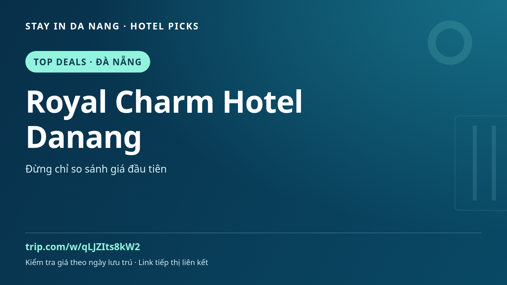

Royal Charm Hotel Danang | 越南峴港住宿指南
計畫去峴港嗎？比較住宿時，可將 Royal Charm Hotel Danang 加入候選名單，並為中部美食、文化及周邊一日遊預留時間。

Top Deals 和 Hot Sellers 是表格標籤，並非已查證折扣或即時銷量排名。檔案沒有價格或有效日期。
依需求考慮 Royal Charm Hotel Danang
先看位置是否適合行程，再閱讀近期住客評價、客房照片、取消條款、早餐選項及交通。設施、價格和空房依日期及房型而異，請在預訂頁確認，不要只憑名稱或廣告照片推斷。
峴港旅行靈感
可安排美溪海灘、韓江與附近會安，這不代表飯店就在景點旁。比較日期，提前規劃機場接送或當地交通，並在活動之間留出休息。
預訂前
- 確認準確地址與行程交通。
- 比較房型、人數、餐食、稅金和取消條件。
- 依實際入住日期確認空房及最終價格。
來源：Bookdeal_Image_Automation_Ready (1).xlsx · Top Deals